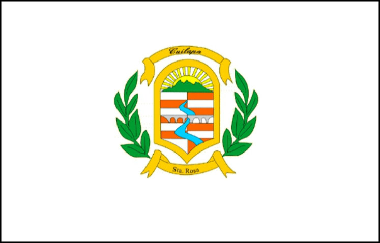
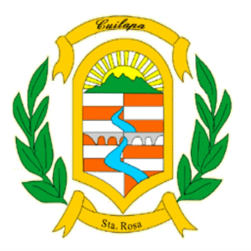

Bandera de Santa Rosa
Es un emblema de mucha sencillez que se compone por un recuadro de fondo blanco que simboliza las etnias y la raza mestiza de los pobladores, así mismo representa a el valiente guerrero Xinca de Santa Rosa quien batalló durante la conquista española del siglo XVI.
En medio de esta bandera se encuentra el escudo de armas del departamento, este descansa sobre una orla de oro y está bordeado por dos cintas y dos ramas de laurel, así mismo se divide por dos campo en el que se encuentra el famoso Puente Los Esclavos.
También se ubica un sol naciente y una gran montaña en representación de a los cuatro volcanes más visitados, que son: Tecuamburro, Cruz quemada, Cerro Redondo y Jumaytepeque.

Descansa sobre una orla de oro y está rodeado por dos cintas una en la parte superior que tiene la palabra Culiapa que es la cabecera departamental y en la parte inferior se ubica otra cinta con la palabra Santa Rosa.
A los lados del escudo, se ubican dos ramas de laurel en señal de los triunfos y logros que han conseguido los pobladores del departamento.
Está dividido en tres campos, en la parte superior se sitúa un sol naciente detrás de unas montañas de gran altura, el sol naciente es la señal de la luz del departamento su evolución y continuo desarrollo, ahora bien las montañas de color verde hacen la referencia de sus cuatro volcanes reconocidos por su belleza, los cuales son: Tecuambrurro, Cruz quemada, Cerro Redondo y Jumaytepeque.
El segundo y tercer cuartel se conectan en sus diseños, y representan al Puente Los Esclavos que es uno de los principales sitios turísticos del departamento, debido sus aguas perfectas para los bañistas, fue una edificación muy emblemática ya que se presentaron muchos inconvenientes al momento de su construcción.
Por otro lado, el río Los Esclavos, fue conocido en el pasado con el nombre de río Grande.El río se originó en la conquista de Guatemala por Pedro de Alvarado con los Xincas, siendo conquistados para la reducción militar de Cuscatlán.
